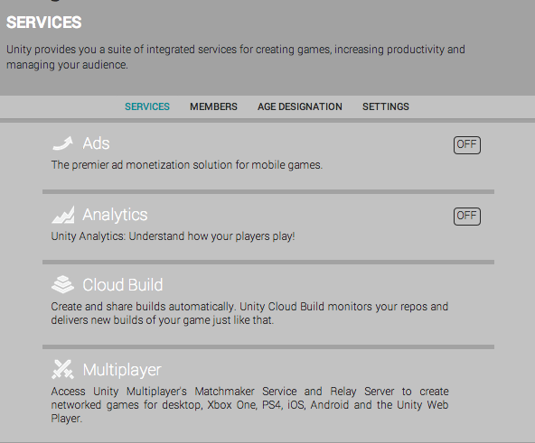

Your UDN Account will be used to manage your Unity Ads profile.
Other members of your Organization will have access to your Ads account as well.
For versions of Unity older than 5.2, click here.
To open the Ads Services panel, click "Ads", and enable the SDK in your project.

using UnityEngine;
using UnityEngine.Advertisements;
public class UnityAdsExample : MonoBehaviour
{
public void ShowAd()
{
if (Advertisement.IsReady())
{
Advertisement.Show();
}
}
}
Unity Ads will automatically initialize in your game, at which point you can call public void ShowAd() to display an ad.
Additional examples and troubleshooting can be found here.
Only completed views are monetized, so it's important to inventivize users to watch ads to maximize revenue.
Successful implementations generally include one or more of the following:
You can detect when the player has watched an ad to completion using the HandleShowResult callback.
Use the following code to detect when players have finished watching an ad:
using UnityEngine;
using UnityEngine.Advertisements;
public class UnityAdsExample : MonoBehaviour
{
public void ShowRewardedAd()
{
if (Advertisement.IsReady("rewardedVideo"))
{
var options = new ShowOptions { resultCallback = HandleShowResult };
Advertisement.Show("rewardedVideo", options);
}
}
private void HandleShowResult(ShowResult result)
{
switch (result)
{
case ShowResult.Finished:
Debug.Log("The ad was successfully shown.");
//
// YOUR CODE TO REWARD THE GAMER
// Give coins etc.
break;
case ShowResult.Skipped:
Debug.Log("The ad was skipped before reaching the end.");
break;
case ShowResult.Failed:
Debug.LogError("The ad failed to be shown.");
break;
}
}
}
In this example, HandleShowResult will be called every time a video with the "rewardedVideo" placement finishes playing.
Additional information on placements can be found in our Knowledge base